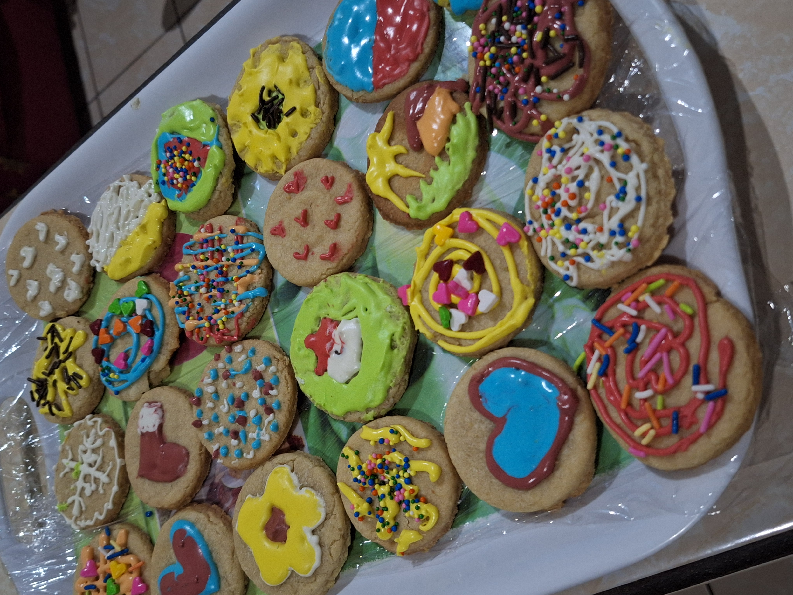
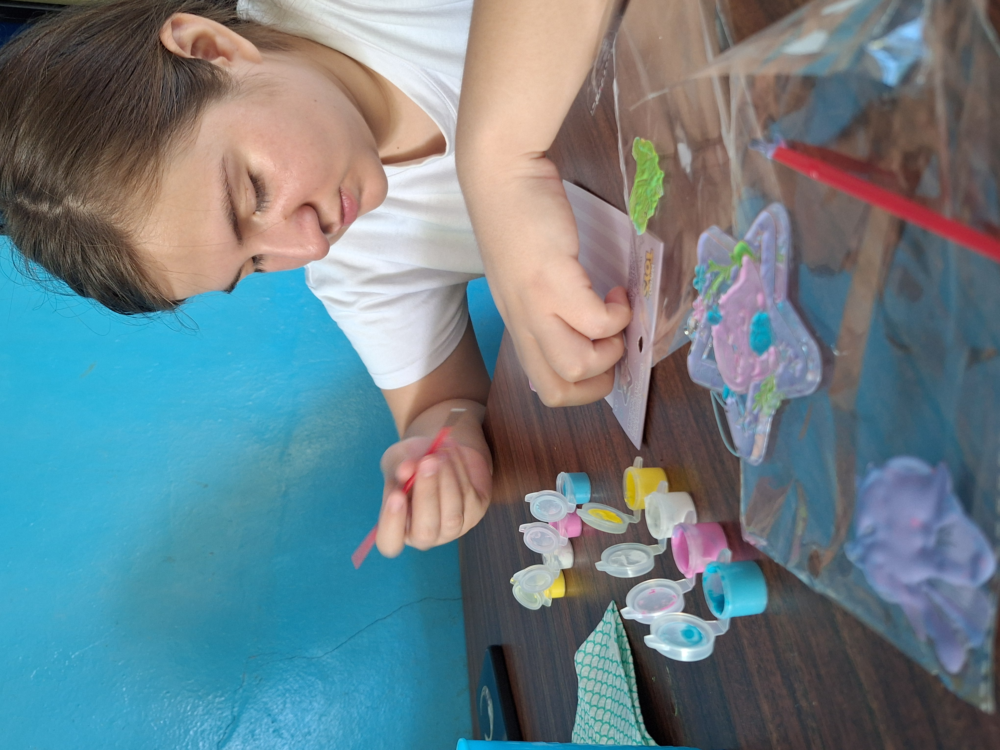
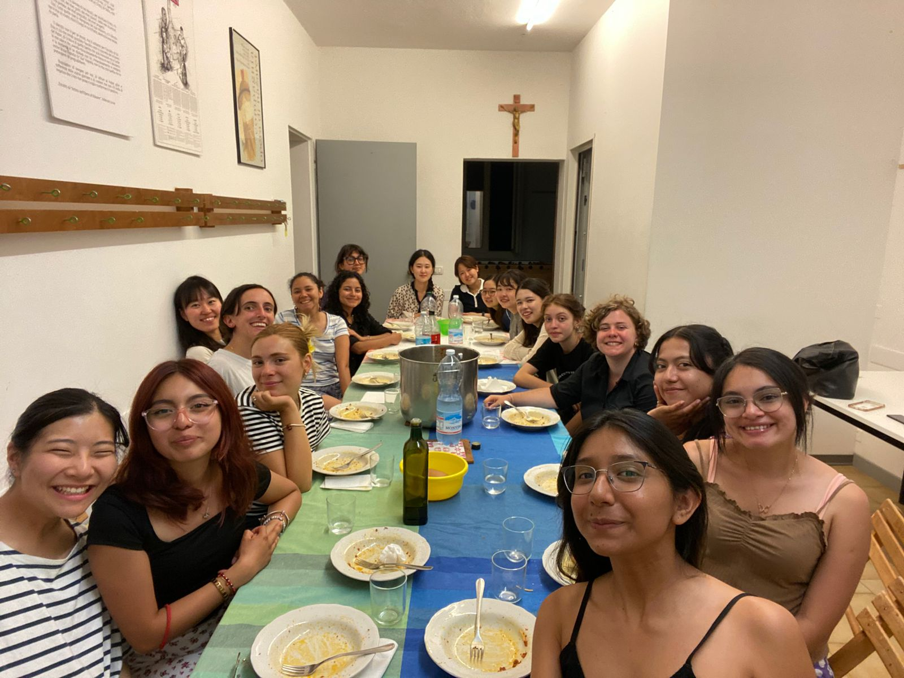
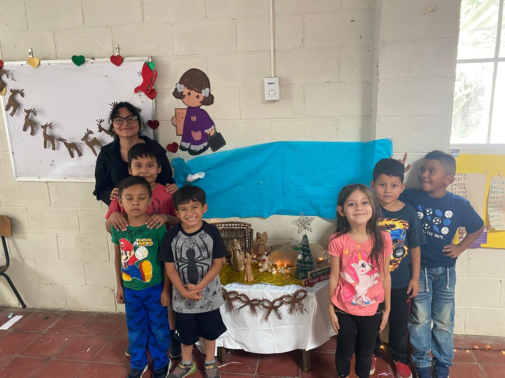
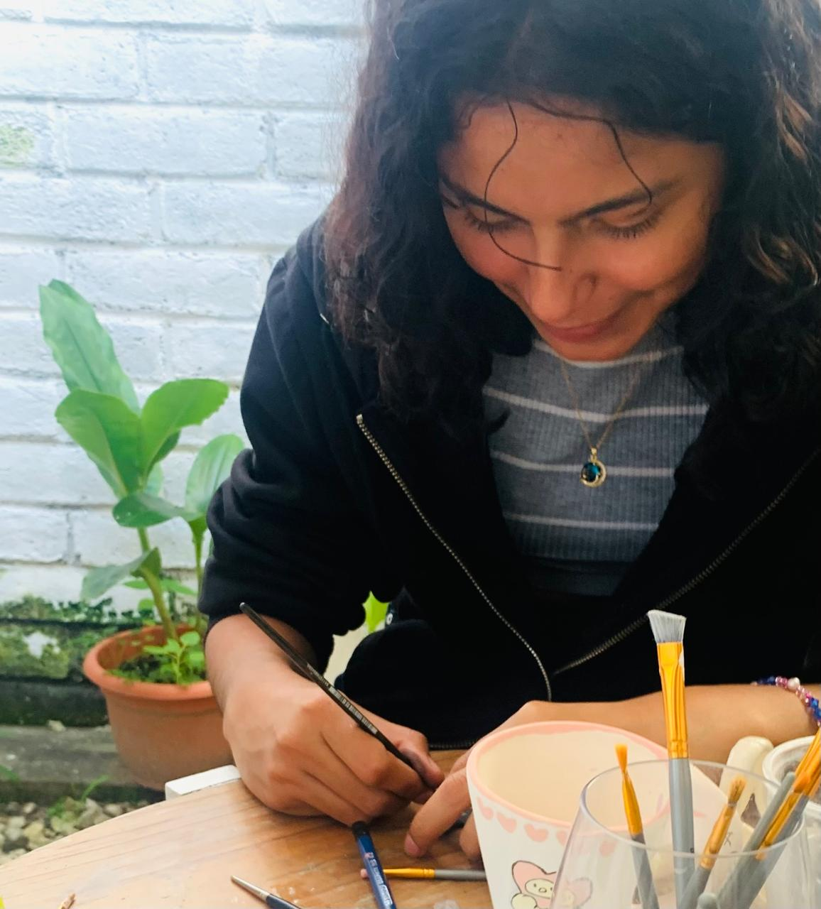
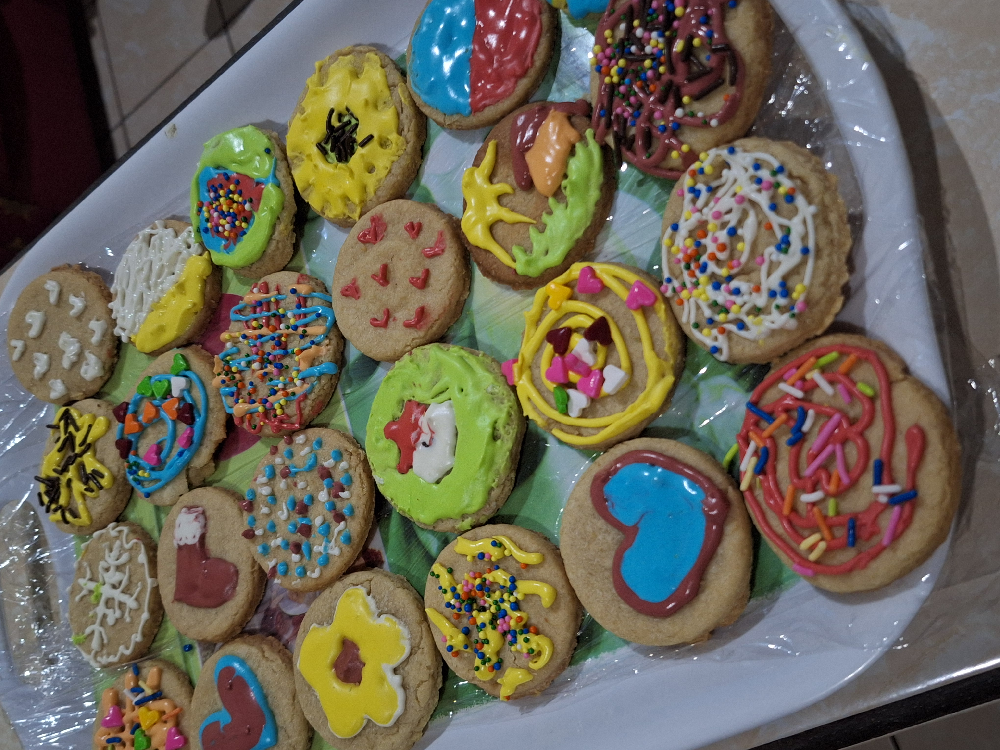
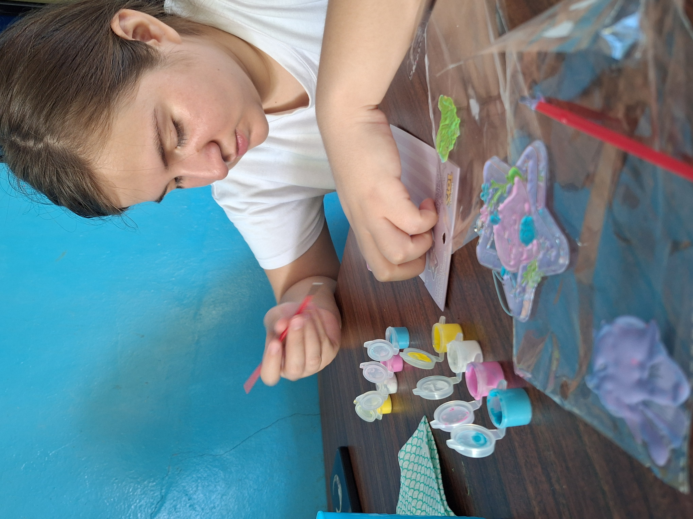
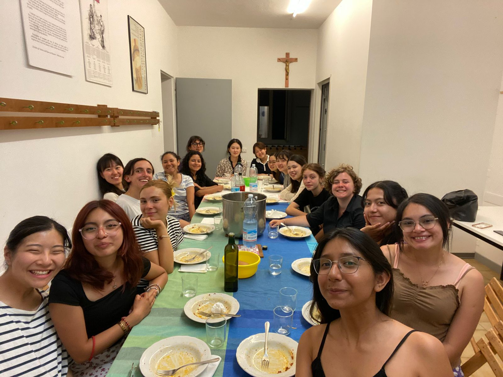
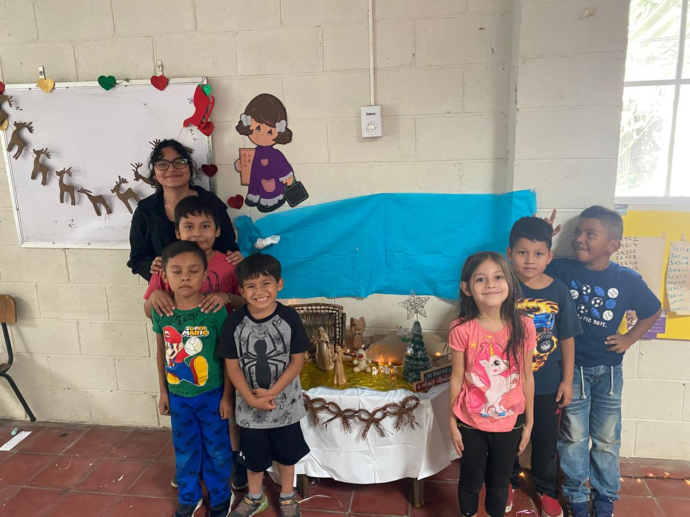
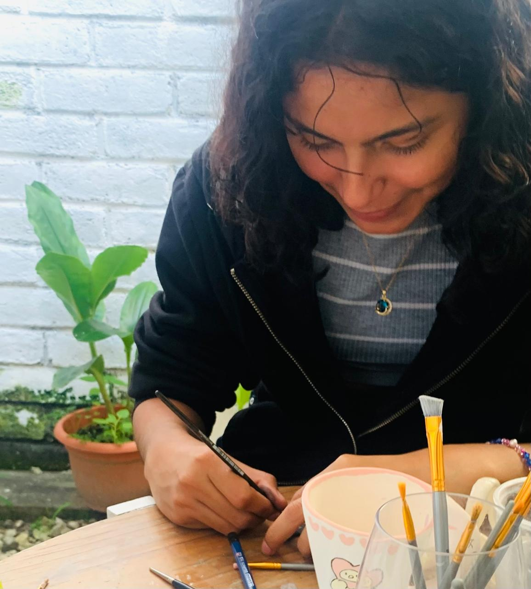

Susana Beltrán
Mi nombre es Susana y tengo 19 años. Nací el 3 de octubre de 2005 en San Miguel, El Salvador. Soy la última de ocho hermanos, cinco chicos y somos tres chicas. Mis padres son de diferentes lugares del país: mi mamá de Morazán y mi papá de La Libertad. Se conocieron cuando estaban jóvenes y desde entonces, nos han enseñado a mí y a mis hermanos diferentes culturas de sus lugares de origen.
Aparte de ser hermana e hija, también soy tía de 8 sobrinos. A 5 de ellos no los conozco, pues viven en Estados Unidos y no puedo ir a visitatarlos. Los otros tres viven en El Salvador y me gusta pasar tiempo con ellos. A veces se llevan toda mi paciencia, pero me gusta intentar enseñarles cosas nuevas para evitar que estén en el teléfono o con el televisor todo el tiempo.
Educación
Uno de los lugares más importantes en mi formación académica fue el programa Supérate. Es ahí donde aprendí habilidades y métodos de estudio que he usado ahora en mi educación superior. También obtuve mi certificación de inglés, el TOEIC, y aprendí un poco de programación y gestión de proyectos.
La lista del lado derecho son las instituciones en donde he estudiado durante mis años de vida. También he agregado los años en los que estudié en dichas instituciones.
Instituciones de formación
- Centro Escolar Jesús Escobar de Cárdenas. 2010 - 2016
- Complejo Educativo Católico Santa Sofía. 2017 - 2021
- Instituto Nacional Joaquín Ernesto Cárdenas. 2022 - 2023
- Centro ¡Supérate! Grupo Q. 2021 - 2023
- Escuela Superior de Economía y Negocios. 2024 - presente
Intereses
Me gustan mucho las cosas que tienen que ver con el arte, incluso si no soy muy buena haciendolas, me gusta intentar. También disfruto pintar con mi sobrino y pasar tiempo con él.
Me gusta, además, pasar tiempo con unos chicos de la comunidad Las Margaritas, de Santa Tecla. Todos los días, con mis amigos de The Others, de la Obra de Nazareth, hacemos una guardería en la que ayudamos a estos niños a hacer tareas.
Estas son unas fotografías de algunas cosas y personas con las que me gusta pasar mi tiempo. Un poco de mis intereses personales y un poco de mis relaciones.
 








